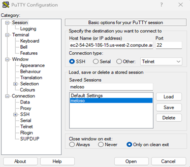
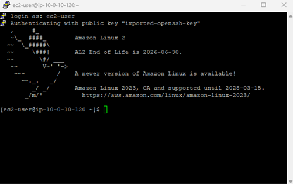
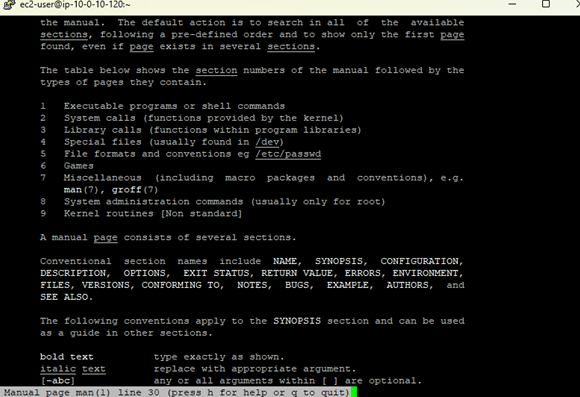

SSH Connection Setup
Downloaded the necessary credentials (.ppk file) and configured PuTTY with the instance's public IP to securely connect from a Windows environment.
This foundational lab establishes the standard workflow for connecting to an Amazon Linux EC2 instance using PuTTY on Windows. It also introduces the Linux command line interface (CLI) and the standard help system.
Established an SSH connection to a Command Host running on
Amazon EC2 via PuTTY using a downloaded PPK key. After logging in as
ec2-user, utilized the man command to search and examine
manual page headers and sections.
Downloaded the necessary credentials (.ppk file) and configured PuTTY with the instance's public IP to securely connect from a Windows environment.
Navigated the standard Linux help system, identifying major headers like SYNOPSIS and DESCRIPTION and understanding the separation of manual sections.
Detailed documentation of the tasks. Note: This SSH setup process using PuTTY serves as the reference workflow for all subsequent Linux labs.
ec2-54-245-186-15.us-west-2.compute.amazonaws.com)..ppk key file into the Auth section to enable secure, password-less login.
login as: prompt, entered the default Amazon Linux username: ec2-user.
man man command to display the manual page for the standard help system itself.
Quick reference of the commands executed in the terminal.
manInterfaces with the system's reference manuals.
man <command_name> : Opens the manual page for a specific utility.space or down arrow : Scroll downup arrow : Scroll upq : Quit the manual page viewerThis lab established the essential prerequisites for working within a remote Linux environment. By successfully configuring an SSH client (PuTTY) with public key authentication, a secure connection was made to a cloud-hosted virtual machine.
Furthermore, exploring the man pages demonstrated how to independently research
commands, understand their syntax, and identify available options, which is a critical skill
for navigating any Unix-based system.